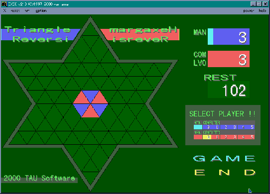

X680x0公会堂へようこそ。ここで公開されているゲームは X68000 用のソフトウェアです。Windows では動作しません。これらのソフトウェアを動かすには X68000 (実機 or エミュレータ) が必要になります。ご注意ください。このページが X680x0 ユーザーのお役に立てれば幸いです。
電脳倶楽部でお馴染みの岡部智啓さんが作成された、三角形を基調とした変形版リバーシです。とても面白いゲームなので、岡部さんから許可をもらって公開します。岡部さん、ありがとうございます。
前バージョンでは、ランダムで指し手を選んでいるだけなので、X68k 君はとても弱かったのですが、ver 0.20 は思考ルーチンがあるためなかなか手強いです。M.Hiroi が最初に負けたのが LV 2 です。なかなかやるじゃない、と気を引き締めて再度挑戦。今度は勝つことができました。次は LV 3 に挑戦したのですが、結果は何と！、途中で全滅してしまいました。いやー、強くなりましたね。
あと、思考ルーチンがもっと速くなると嬉しいですね。LV 4 になると X68030[25MHz] でも思考時間が相当に長くなるので、060turbo かエミュレータでプレイした方がいいでしょう。思考ルーチンの高速化や改良など、M.Hiroi も考えてみたいと思います。興味のある方はぜひ思考ルーチンの作成に挑戦してください。
なお、ここで公開する「三角(六芒)リバーシ」は X68000 用のソフトウェアですが、 作者の岡部さんが Windows で動作する 「三角（六芒）リバーシ」 for Windows を TAU LAND で公開されています。興味のある方はぜひ遊んでみてください。
このゲームは Human68k 上で動作します。ファイル trv_020.lzh を適当なフォルダに解凍します。それから、次のファイル（または同等品）を常駐させてください。
FLOAT?.X IOCS.X
あとはコマンドラインから、次のように入力してリターンキーを押して下さい。
@:>TRV_MAIN
問題が無ければ、六芒星のゲーム画面が表示されます。詳しい説明は同梱の TRV_020.TXT を参照してください。
TAU さんが作成された『三角（六芒）リバーシ』の思考ルーチンを、M.Hiroi が作成したものに差し替えたバージョンです。現バージョンでは、TAU さんの思考ルーチンと切り替えることはできません。まだαバージョンのため、思考ルーチンは強くありませんが、終盤では残り 7 手(LV1) - 12 手(LV5) になると最後まで読み切るので、油断すると最後で逆転されるでしょう。
基本的なアルゴリズムは拙作のリバーシと同じで、αβ枝刈りと反復深化を組み合わせています。思考時間はリバーシよりも少し遅いです。LV 5 は X68030 でも少し待たされることがあります。LV 5 は 060turbo かエミュレータでプレイした方が快適でしょう。
評価関数のチューニングはまだ不十分ですが、なかなか強くならないので、αバージョンとして公開することにしました。M.Hiroi は LV 4 といい勝負です。最後に逆転負けすることが多いので、序盤、中盤の思考（評価関数）はまだまだ弱いと思います。強くするアイデアがありましたら、ぜひ教えてくださいませ。
三角リバーシと同じです。実行ファイル名は TRV_HA.X です。コマンドラインから TRV_HA を入力してリターンキーを押してください。問題が無ければ、六芒星のゲーム画面が表示されます。
TAU さんが作成された変形版リバーシの第２弾です。三角形を基調にしているところは「三角(六芒)リバーシ」と同じですが、このゲームでは盤面の形が「菱形」になっているのです。菱形といっても正方形ですから、六芒リバーシよりも簡単なように思われます。ところが、実際にプレイしてみると、普通のリバーシはもちろんのこと、六芒リバーシとも異なるゲーム感覚が必要なようで、M.Hiroi は Level 3 でケチョンケチョンにやられてしまいました。とても面白いゲームなので、ぜひプレイしてみてください。
なお、このゲームは TAU さんより許可をいただいて公開しております。TAU さん、ありがとうございます。
なお、ここで公開する『三角(菱形)リバーシ』は X68000 用のソフトウェアですが、 作者の岡部さんが Windows で動作する『三角（菱形）リバーシ』 for Windows を TAU LAND で公開されています。興味のある方はぜひ遊んでみてください。
このゲームは Human68k 上で動作します。ファイル trr_020.lzh を適当なフォルダに解凍します。それから、次のファイル（または同等品）を常駐させてください。
FLOAT?.X IOCS.X
あとはコマンドラインから、次のように入力してリターンキーを押して下さい。
@:>TRR_MAIN
問題が無ければ、菱形のゲーム画面が表示されます。詳しい説明は同梱の TRR_020.TXT を参照してください。
M.Hiroi のＣ言語環境は GCC と LIBC です。TAU さんの三角リバーシが GCC と XC library で作成されていたので、M.Hiroi の X68030 にも XC library を導入することにしました。もちろん LIBC も必要なので、設定を XC library へ切り替えるバッチファイルを作成することにしました。ライブラリの切り替えは、環境変数を書き換えることで簡単に実現できます。
まず、XC のインクルードファイルとライブラリをハードディスクにコピーします。M.Hiroi のハードディスクは、次のような構成になっています。
\ |- CC : GCC, HAS, HLK | |- USR | |- INCLUDE : LIBC インクルードファイル | |- LIB : LIBC ライブラリ | | | |- XC | | |- INCLUDE : XC インクルードファイル | | |- LIB : XC ライブラリ
ディレクトリ USR に XC 用のサブディレクトリ XC を作ります。そして、A:\usr\xc\include に XC のインクルードファイルを、A:\usr\xc\lib に XC のライブラリをコピーします。GCC を使う場合、gnulib という算術演算用のライブラリが必要になります。GCC の配布パッケージには gnulib.a と gnulib.l がありますが、XC ライブラリは .l 形式なので gunlib.l をコピーしてください。
あとはバッチファイルで環境変数を書き換えます。
リスト : XC library に切り替えるバッチファイル SET include=a:\usr\xc\lib SET lib=a:\usr\xc\lib SET GCC_AS=HAS SET GCC_LINK=HLK -l floatfnc.l SET GCC_LIB=.l SET GCC_NO_XCLIB= SET DOSEQU=DOSCALL.MAC
環境変数 include と lib には、インクルードファイルとライブラリをコピーしたディレクトリを指定します。GCC_AS にはアセンブラ HAS を指定します。GCC + LIBC と同じ設定であれば、書き換える必要はありません。GCC_LINK にはリンカ HLK を指定します。
ここで注意事項があります。XC library を使う場合、必ず floatfnc.l をリンクしてください。GCC の場合、デフォルトでは clib.l と gnulib.l しかリンクしないので、floatfnc.l を指定しないと HLK でリンクエラーが発生するのです。これは GCC と XC library の組み合わせて使う場合、誰もが体験する問題です。電脳倶楽部のＱ＆Ａコーナーでも、何回か質問されていました。ＦＡＱといってもいいですね。HLK のオプションスイッチ -l で、ライブラリ floatfnc.l をリンクするように指定します。
XC library は .l 形式なので、GCC_LIB には .l を指定します。GCC_NO_XCLIB が yes に設定されている場合は削除しましょう。最後に、DOSEQU を XC library の DOSCALL.MAC に設定します。このファイルはアセンブラで使用されます。
M.Hiroi の環境では、これで LIBC から XC library へ設定を切り替えることができました。何か間違いや問題点がありましたら、ご指摘くださいませ。ゲームを作る場合、LIBC よりも XC library の方が適していると思います。XC は無償公開されているので、ありがたく使わせてもらいましょう。
「Master Mind Square」 は TAU さん が作成された X68k 用パズルゲームです。ゲーム内容は「2 次元マスターマインド」で、6 色の駒の配置をできるだけ少ない回数で当てるのが目的です。
盤面は Level 1 が 3 行 3 列で、駒は 2 個ずつあります。Level が上がると盤面は広くなり、駒の個数も多くなります。ヒントは行と列ごとに示され、色と位置が合っている場合は「星」、色だけが合っている場合は「点」が表示されます。Level 1 の場合は 6 つのヒントが示されます。
マスターマインドの 2 次元バージョンなので、M.Hiroi は難しいゲームではないかと予想していました。ところが、ヒントが多いせいか難易度は少し低めになっているようで、誰にでも楽しめるパズルゲームだと思います。パズル好きの方はぜひプレイしてみてください。
Master Mind Square の場合、「マスターマインドの解法」と同様のアルゴリズムで解くことができます。はたして何回で解くことができるのか、M.Hiroi はとても興味があります。さっそくプログラムを作ってみました。
プログラムは簡単なので説明は割愛いたします。詳細は プログラムリスト をお読みくださいませ。プログラムはＣ言語で作成して、Borland C++ 5.5.1 for Win32 でコンパイルしました。試していませんが X68k の GCC でもコンパイルできると思います。乱数で問題を 100 個作って試してみたところ、結果は次のようになりました。
| Lv | 最小 | 最大 | 平均 |
|---|---|---|---|
| １ | ３ | ５ | 3.47 |
| ２ | ３ | ５ | 3.9 |
| ３ | ３ | ５ | 3.56 |
プログラムは M.Hiroi のオンボロマシン (Windows95, Pentium 166 MHz) で実行しました。Level 3 になると、ちょっと時間がかかるようになります。それにしても、Level 3 でも 5 回で解けるとはちょっと驚きました。人間には難しくても、コンピュータにはヒントがたくさんあるので簡単に解けるのかもしれませんね。
ところで、今回は乱数で問題を 100 題作成しましたが、もしかすると 5 回よりも多くかかる問題があるかもしれません。どんな問題でも必ず 5 回以内で解けるわけではありません。ご注意くださいませ。
それでは、Level 1 で 5 回で当てた実行例を示します。このプログラムでは、 色の種類を 0 - 5 の数字で、星を bulls で、点を cows で表しています。
***** 正解 *****
5 1 0
3 5 1
0 2 4
****************
***** 1 回 *****
0 0 1
1 2 2
3 3 4
0: bulls = 0, cows = 2 /* 0, 0, 1 のチェック */
1: bulls = 0, cows = 1 /* 1, 2, 2 のチェック */
2: bulls = 1, cows = 0 /* 3, 3, 4 のチェック */
3: bulls = 0, cows = 2 /* 0, 1, 3 のチェック */
4: bulls = 0, cows = 1 /* 0, 2, 3 のチェック */
5: bulls = 1, cows = 1 /* 1, 2, 4 のチェック */
***** 2 回 *****
1 2 0
0 4 1
2 5 4
0: bulls = 1, cows = 1
1: bulls = 1, cows = 0
2: bulls = 1, cows = 1
3: bulls = 0, cows = 1
4: bulls = 0, cows = 2
5: bulls = 3, cows = 0
***** 3 回 *****
3 1 0
3 5 1
0 2 4
0: bulls = 2, cows = 0
1: bulls = 3, cows = 0
2: bulls = 3, cows = 0
3: bulls = 2, cows = 0
4: bulls = 3, cows = 0
5: bulls = 3, cows = 0
***** 4 回 *****
4 1 0
3 5 1
0 2 4
0: bulls = 2, cows = 0
1: bulls = 3, cows = 0
2: bulls = 3, cows = 0
3: bulls = 2, cows = 0
4: bulls = 3, cows = 0
5: bulls = 3, cows = 0
***** 5 回 *****
5 1 0
3 5 1
0 2 4
おめでとう！正解です！！
ちなみに、Level 1 で色の種類を 8 つに増やしたところ、最小 3 回、最大 7 回、平均 4.63 回になりました。色の種類を増やすと、やっぱり難しくなりますね。興味のある方はほかの Level でも試してみてください。
解法プログラムのアルゴリズムは生成検定法です。バックトラックで駒の組み合わせをすべて生成し、今まで行った質問の結果と矛盾しない組み合わせを見つけたら、それを質問していくことで答えを求めています。このアルゴリズムはマスターマインドの解法プログラムと同じです。
生成検定法で問題を解く場合、生成するデータをできるだけ絞り込むことが重要です。 このプログラムでは、駒の組み合わせを生成している途中で、直線が完成したら質問の結果と矛盾していないかチェックすることで枝刈りを行っています。3 行 3 列盤を例に説明しましょう。次の図を見てください。
┌─┬─┬─┐ │０│１│２│ ├─┼─┼─┤ │３│４│５│ ├─┼─┼─┤ │６│７│８│ └─┴─┴─┘ 図：盤面の番号
リスト：グローバル変数の定義
/* 盤面 */
char board[SIZE];
/* 直線の定義 */
const char line[LNUM][4] = {
0, 1, 2, -1, /* 0 */
3, 4, 5, -1, /* 1 */
6, 7, 8, -1, /* 2 */
0, 3, 6, -1, /* 3 */
1, 4, 7, -1, /* 4 */
2, 5, 8, -1, /* 5 */
};
たとえば、board の 0, 1, 2 に駒を並べると、配列 line で定義した直線 0 (0 - 1 - 2) が完成しますね。この時点で、直線 0 の駒の並びが質問の結果と矛盾しないかチェックするのです。もしも結果と矛盾していれば、ここでバックトラックすればいいわけです。このように、できるだけ早い段階で枝刈りを行うことで、実行時間を大幅に短縮することができます。プログラムは次のようになります。
リスト：Master Mind Square の解法 (一部)
/* チェックライン */
char check_line_table[SIZE + 1] = {
-1, /* DUMMY */
-1, -1, 0,
-1, -1, 1,
3, 4, 2,
};
/* Master Mind Square を解く */
int solve( int n )
{
if( check_line_table[n] >= 0 && !check_query( check_line_table[n], board ) )
return FALSE;
if( n == SIZE ){
if( check_query( 5, board ) ){ /* 最後のチェック */
if( ask( board ) ){
printf("おめでとう！正解です！！\n");
return TRUE;
}
}
} else {
・・・・・省略・・・・・
配列 check_line_table は関数 solve の引数 n に対応していて、そのときにチェックする直線の番号を定義しています。チェックする直線がない場合は -1 をセットします。
たとえば n = 3 の場合、board には 0, 1, 2 に駒がセットされ、直線 0 が完成していますね。check_line_table[3] の値は 0 なので、直線 0 のチェックを関数 check_query で行います。n = 6 の場合は 3, 4, 5 に駒がセットされるので、直線 1 が完成しています。check_line_table[6] の値は 1 なので、直線 1 のチェックを行います。
このように、直線が完成したときに質問の結果と矛盾しないかチェックし、結果と矛盾していたらその時点でバックトラックします。最後 (n = 9) は 2 本の直線が同時に完成します。check_line_table[9] で直線 2 (6 - 7 - 8) のチェックを設定し、関数 ask で質問する直前で直線 5 をチェックしています。
まあ、単純な枝刈りなので、高速化する余地はまだ残っていると思われます。たとえば、駒の並べ方を工夫すると、もう少し速くなるかもしれません。このプログラムでは、駒を 6 つ並べたところで 2 本の直線が完成します。ところが、駒を 0, 1, 2, 3, 6 という順番で並べると、5 つの駒で直線が 2 本完成します。枝刈りの効率はこの方が良いはずです。興味のある方は改造してみてください。
{kind=link}